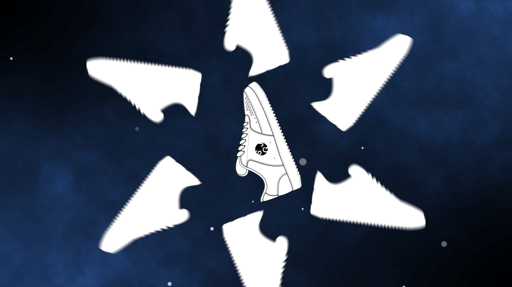

Home
Logo
Web
Video 1
Video 2
shoe video
운동화를 소개하는 30초 광고입니다. 운동화가 가진 4가지 특징을 설명하고, 음악의 박자와 분위기에 맞춰 모션 그래픽을 만들었습니다.
1.sequence

#1 인트로
본격적으로 운동화가 나오기 전에 음악에 초반 부분에 어울리는 인트로 모션 그래픽을 만들었습니다. 음악에 맞춰 1초~2초마다 서로 다른 모양의 모션을 만들어서 지루해보이지 않도록 만들었습니다.
2.sequence
#2 가벼움
떨어지는 깃털을 배경으로 운동화도 깃털처럼 지그재그로 떨어지게 하여 가벼운 운동화의 특징을 보여줍니다.
#3 방수
처음에 물을 맞아도 흡수하지 않고, 털어내어 물을 떨어뜨려 방수가 잘되는 특징을 보여줍니다.
#4 통기성
신발이 살아 숨쉬는 것처럼 보이게 하여 공기가 잘 통하는 것처럼 보이도록 했습니다.
3.sequence
#5 편안함, 유연함
바닥이 푹신하고 유연한 운동화는 신고 달리기가 편합니다. 운동화가 고무공처럼 튕겨지게 만들어 젤리처럼 말랑거리게 표현했습니다.
#6 엔딩
위, 아래로 검은 화면이 열렸다가 닫히면서 마지막에 제목이 보이면서 영상이 끝이 납니다.